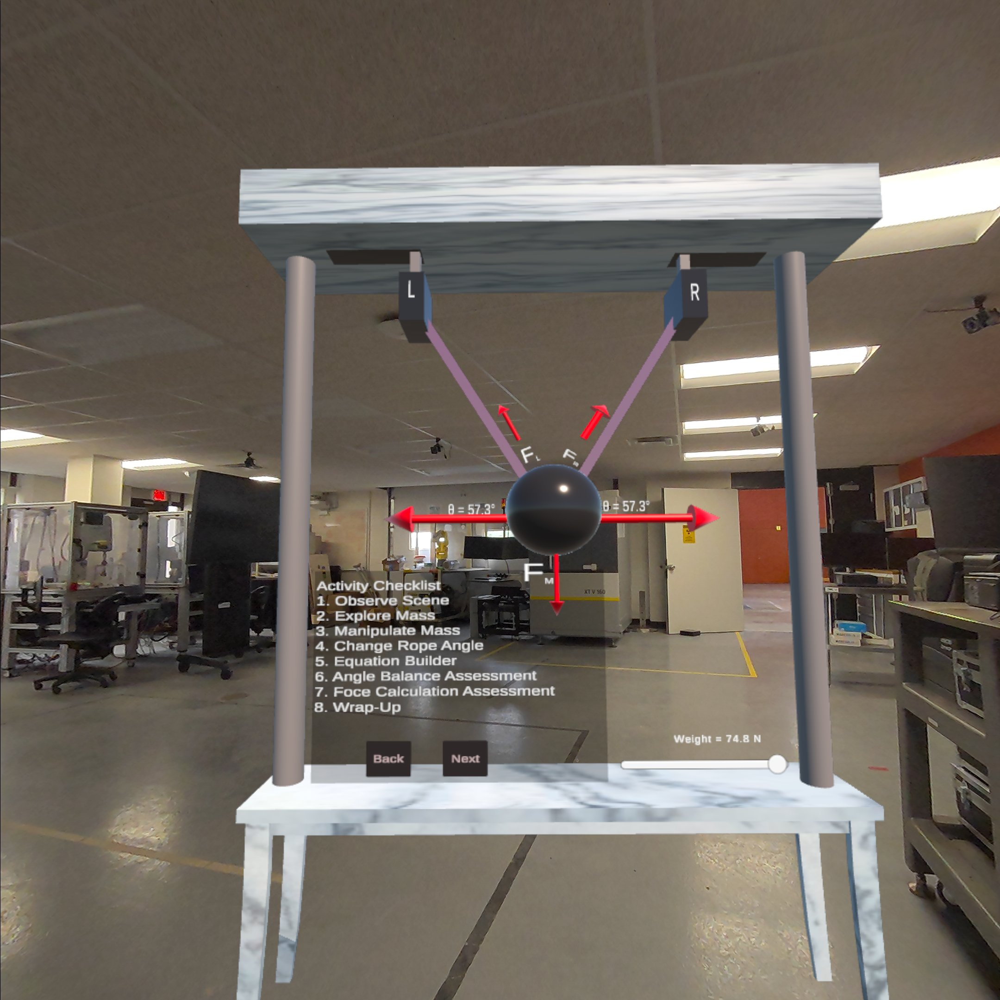
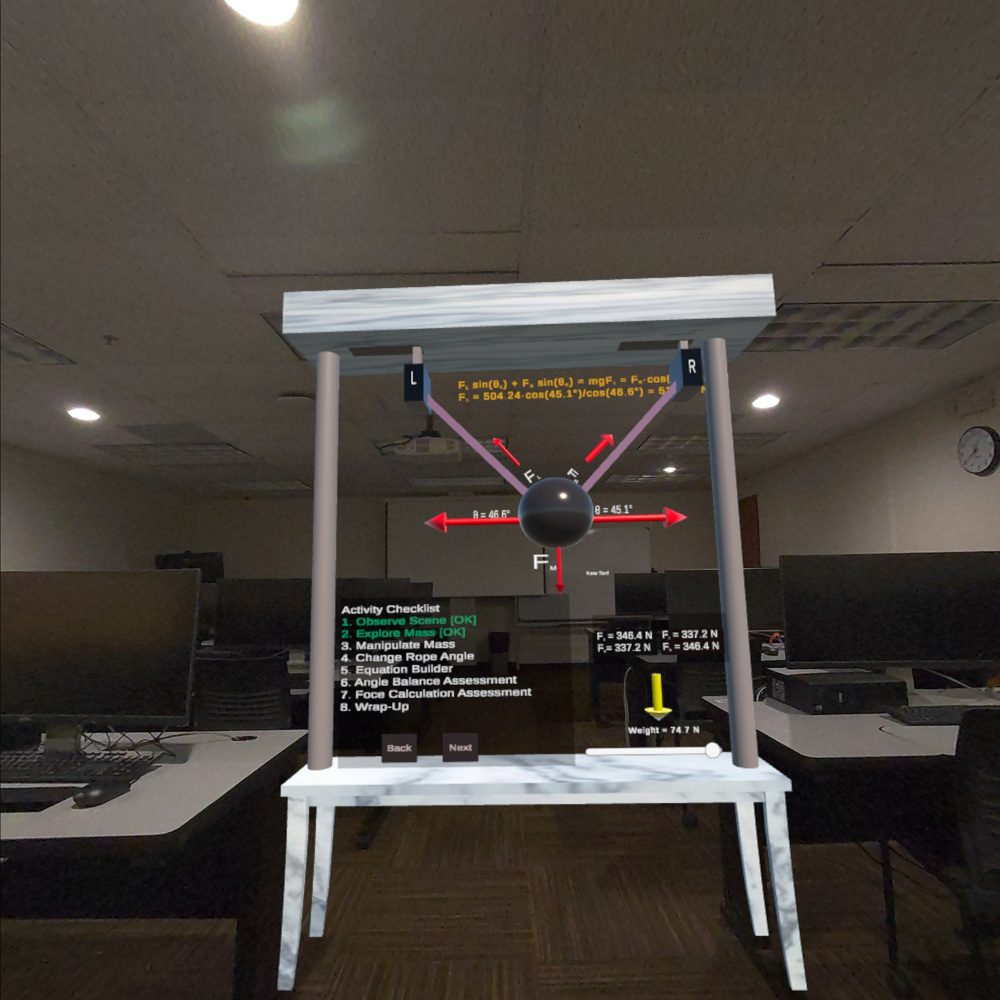
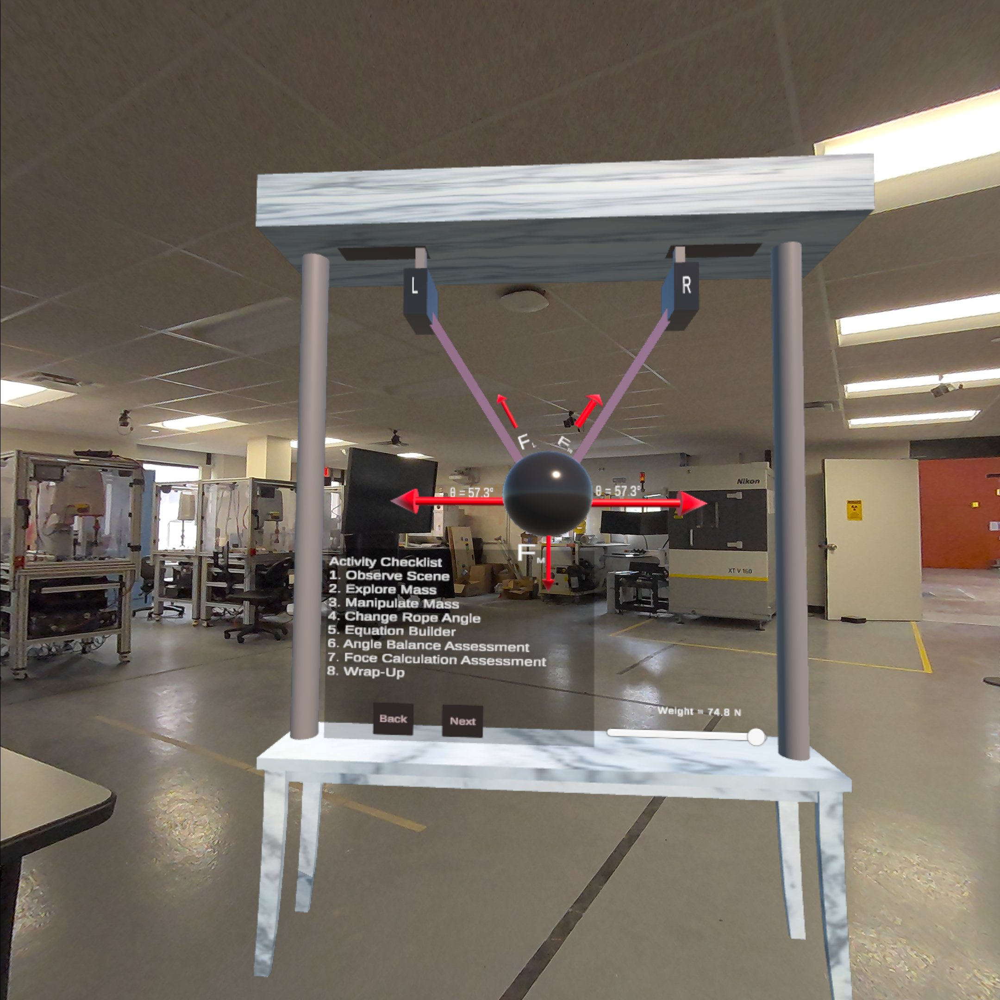

Research Projects & Demonstrations
XR Game-Based Engineering Learning System (Unity3D)




This project introduces an Extended Reality (XR) learning environment designed in Unity3D, enabling students to visualize and interact with engineering concepts in real-world settings through augmented reality. The system provides immersive, hands-on experiences where users can observe, manipulate, and analyze physical forces in 3D space.
- Developed an interactive XR application using Unity3D and AR Foundation.
- Allows students to place virtual engineering 3D models in real-world environments.
- Provides step-by-step guidance for performing experiments and procedures.
- Integrates force calculation in 3D space.
- Real-time object manipulation using Meta Quest controllers.
- Designed to enhance conceptual understanding of statics course.
- Used for classroom demonstrations and individual student exploration.
Research Publications
Selected peer-reviewed papers from the ART Lab focusing on augmented reality, robotics education, and human-robot interaction.
An augmented reality interface for human-robot interaction in unconstrained environments
IEEE/RSJ International Conference on Intelligent Robots and Systems (IROS)
Examining the effectiveness of a professional development program: integration of educational robotics into science and mathematics curricula
Journal of Science Education and Technology, 30(4), 567–581
An augmented reality framework for robotic tool-path teaching
Procedia CIRP, 93, 1218–1223
Building trust in robots in robotics-focused STEM education under TPACK framework in middle schools
ASEE Annual Conference & Exposition
Augmented reality as a medium for human-robot collaborative tasks
IEEE International Conference on Robot and Human Interactive Communication (RO-MAN)
An augmented reality spatial referencing system for mobile robots
IEEE/RSJ International Conference on Intelligent Robots and Systems (IROS)
Determining prerequisites for middle school students to participate in robotics-based STEM lessons: A computational thinking approach
ASEE Annual Conference & Exposition, Salt Lake City